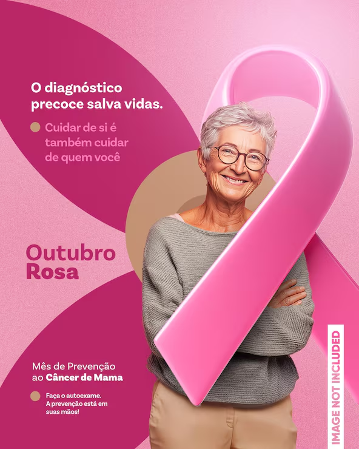
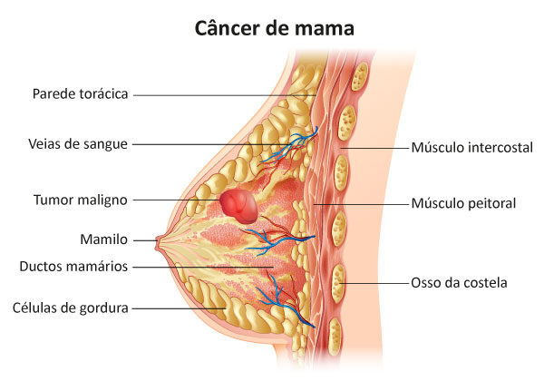
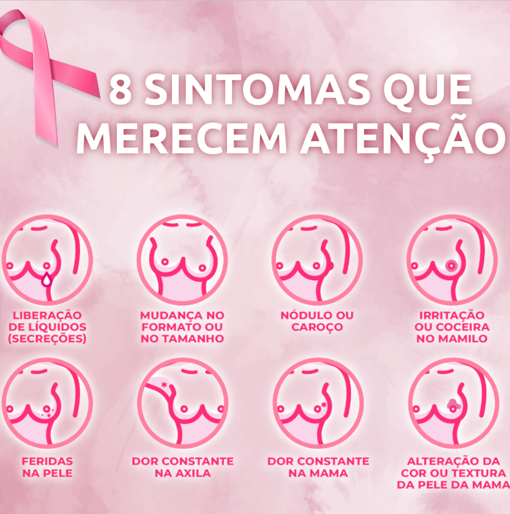

Um mês dedicado à prevenção e ao diagnóstico precoce do câncer de mama.
Aprenda o autoexame
Nos Estados Unidos, outubro passa a ser o mês de conscientização sobre o câncer de mama.
Em Nova York acontece a primeira Corrida pela Cura, com participantes usando fitas rosa.
O laço rosa se populariza como símbolo da luta contra a doença.
No Brasil, o Obelisco do Ibirapuera, em São Paulo, é iluminado de rosa pela primeira vez.
Prédios, monumentos e campanhas de todo o país se vestem de rosa em outubro.
Acontece quando células da mama se multiplicam de forma desordenada. Quanto mais cedo é descoberto, maiores as chances de cura.

Homens também podem ter câncer de mama, embora seja bem mais raro. Percebeu algo diferente? Procure um médico.

Não existe prevenção total, mas bons hábitos reduzem o risco.
Mais frutas, verduras e legumes. Menos ultraprocessados.
Pelo menos 150 minutos de atividade por semana.
Ambos aumentam o risco de vários tipos de câncer.
A mamografia é indicada, em geral, dos 50 aos 69 anos. Converse com seu médico.
Conhecer o próprio corpo ajuda a notar mudanças. Clique em cada passo.
Com os braços ao lado do corpo, olhe o formato, o tamanho e a cor da pele das mamas. Depois, levante os braços e observe de novo.
Durante o banho, com a pele ensaboada, use as pontas dos dedos em movimentos circulares. Examine toda a mama e a axila.
Deite-se com um braço atrás da cabeça e repita os movimentos circulares na mama do mesmo lado. Troque de lado.
Aperte levemente o mamilo e veja se sai algum líquido. Se houver secreção ou qualquer alteração, procure um médico.
O autoexame não substitui a consulta médica nem a mamografia.
Envie este site para amigas, mães e colegas.
Lembre quem você ama de marcar a consulta e a mamografia.
Ouça sem julgar e acompanhe a pessoa em consultas e tratamentos.
Hospitais e ONGs de apoio recebem ajuda e doações o ano todo.
Relatos ilustrativos, inspirados em histórias comuns de pacientes e familiares.
Consulte fontes confiáveis: